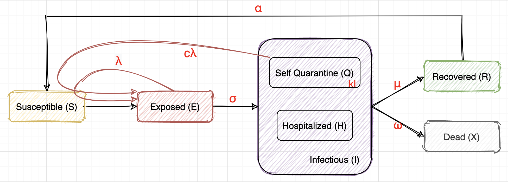
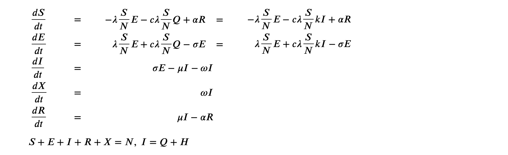
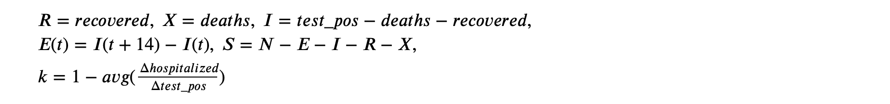

Covid19 Policy Decision Helper
What’s your project called?
Covid-19 Policy Decision Helper
Here’s the elevator pitch
Predictive modeling of Covid-19 transmission that helps policymakers make the best decisions to control mortality with the least costs.
It’s built with
Languages
- Python, R, Markdown, HTML
AWS services
- AWS Data Exchange, EC2, AMI, RDS
Libraries
- R:
lmtest - Python:
pandas,numpy,pylab,scipy.optimize,scipy.integrate
Created by
- Xinyi Lai (xlai7@illinois.edu)
- Yulin Li (yulinl2@illinois.edu)
Here’s the whole story
Inspiration
As the COVID-19 pandemic spreads out all over the world, we see different strategies adopted by different countries and states, and (maybe therefore), we see different characteristics and trends in the transmission of the virus in different regions. There are lots of concerns about the future of the pandemic, and there are lots of debates about policymaking in many countries and regions.
We think that it will be interesting to model the dynamics of viral transmission and to visualize the future trend of COVID-19. Then by setting a tolerant threshold for the future mortality rate, we can find the best combination of parameters using optimization methods. Furthermore, we can model the relationship between the transmission parameters and the environmental factors such as the control policy, hospital beds, mobility, population, and so on. Once it is modeled, the effects of them on the transmission process can be explained quantitively, and the optimal set of parameters obtained above will correspond to a set of control policies with the least cost, that is, the most relaxed policy acceptable.
What it does
- Viral transmission model. We built a dynamic model for viral transmission using differential equations. The state-level time-series data is used in the fitting of the model. After choosing a state of interest and a time period, the transmission parameters will be optimized and outputted, and a predicted curve will show the trend of the pandemic assuming all conditions stay the same in the future.
- Finding the best set of parameters. With a tolerant threshold of mortality rate / infected rate in a given future period set, our algorithm can find the best set of parameters using the optimization methods. That is, the most relaxed conditions while keeping the mortality rate / infected rate under control for a given time period. In real policymaking, dynamic optimization can be of great help since it can continuously correct the model and give the optimal parameters based on the real-time data.
- Modeling the relationship between the transmission parameters and environmental factors. We aim at obtaining models that are interpretive as well as predictive; in order words, we are hoping to find models that are simple, accessible and easy to be understood, so that people can gain some insights of what is significant to the way a pandemic develops; but at the same time, we are also searching for models among those explainable models that are most helpful for prediction of transmission parameters.
How we built it
Part O: Data
Data source from AWS Data Exchange:
- Global Coronavirus (COVID-19) Data (Corona Data Scraper) provided by Enigma
- COVID-19 Prediction Models Counties & Hospitals (Yu Group (UC Berkeley)) provided by Rearc
Complementary sources:
Part I: SEIR infection model
After preprocessing, we fetched the state-level time-series data of cases, deaths, recovered, hospitalized, date, and population.
We built a viral transmission model based on the classical SEIR model with some modifications. 
We Assume…
- Susceptible (S): healthy people, will be infected and turn into E after close contact with E or Q.
- Exposed (E): infected but have no symptoms yet, infectious with a rate of $\lambda$. E will turn into I after the virus incubation period, which is 14 days on average. So we assume $\sigma = 1/14$, dE/dt (t) = dI/dt (t+14).
- Infectious (I): infected and have symptoms. We will take the data of test_positive or cases_reported as the data of I. The severe cases will be hospitalized (H), the mild cases will be in self-quarantine (Q). I may recover or die after some time.
- Self Quarantine (Q): have symptoms, may still have some contact with others, thus infectious with a different rate of $c\lambda$ ($0 \le c \le 1$). We also assume $Q = kI$, where $k = 1 - avg(\frac{\Delta hospitalized}{\Delta test_pos}) $
- Hospitalized (H): have symptoms, kept in hospitals, assume no contact with S.
- Recovered (R): recovered and immune, may turn into S again (immunity lost or virus not cleared)
- Dead (X): dead unfortunately :(
Therefore, we have a set of differential equations to describe this process:

Apply to our datasets, we have:

Running the model for each state for every 15-day period with appropriate data, we got the best parameters fitting the models for each state and time period.
Part II: backward optimization
Consider the physical meaning of all the parameters in the above SEIR model:
- $\lambda$, $c\lambda$: infection rate, which should have a direct relationship with the strength of the control policy (how many days should people in self-quarantine stay at home, how strict should the quarantine be, how should social distancing be enforced, whether or not people are required to wear a mask, etc).
- $\sigma$: we choose $\sigma = 1/14$ because the incubation period is 14 days on average.
- $k$: the proportion of positive cases that are not hospitalized, which should have a relationship with the current medical resources such as the number of hospital beds.
- $\mu, \omega$: recover rate and death rate, which should have a relationship with the current medical resources and the health condition of the population.
- $\alpha$: immunity lost rate, it depends on the characteristic of the virus and sometimes relates to the testing methods.
Among all above, an important limit to the control of the pandemic is medical resources. In other words, $k, \mu, \omega$ depends on the temporal situations of each states or countries. Another limit is the inherent feature of the COVID-19 virus itself, i.e. $\sigma$ and $\alpha$.
However, the policy maker can decide on the control policy, which directly affects $\lambda$ and $c\lambda$. We know that the control policy is like a double-edged sword: if it is too strict, it would have a bad impact on the economy and people’s social life; but if it is too relaxed, the pandemic will soon lose control, causing even more severe consequences.
Therefore, our solution is trying to find the best set of transmission parameters $\lambda$ and $c$ using optimization methods.
- Given a state of interest and a start date, the algorithm will fetch for the pandemic data of that region at that time. It will then take the original parameters as the first guess, and simulate the trend assuming all conditions stay the same in future.
- With the control term (death / case) and the control factor (proportion of population) specified, the optimization algorithm will run to find the best set of parameters needed to satisfy the requirement. And by controlling the transmission parameters, the trend can also be visualized.
- Ideally, this algorithm can be run dynamically using the real time data, so that the policy can be adjusted timely and effectively.
By controling the transmission parameters, we can see some completely different curves, which means that making a wise policy decision may significantly affect the future of people.
Part III: environmental factors modeling
Finally, we attempted to model the relationships between the SEIR model parameters and a variety of social/environmental factors, including demographic, medical and policy factors. We aim at obtaining models that are interpretive as well as predictive; in order words, we are hoping to find models that are simple, accessible and easy to be understood, so that people can gain some insights of what is significant to the way a pandemic develops, but at the same time, we are also searching for models among those explainable models that are most helpful for prediction making.
With such goals in mind, we engaged a relatively small number of variables in our study–variables that seem most significant to us intuitively, from the most accessible open data source.
The variables engaged in the study are the following:
- SEIR model parameters:
k: the proportion of positive cases that are not hospitalizedsigma: we choosesigma= 1/14 because the incubation period is 14 days on average.lamda: infection rate of E (exposed)c: a coefficient measuring the effectiveness of self-quarantine,c*lamdais the infection rate of Q (self-quarantine)alpha: immunity lost rateomega: death ratemiu: recover rate
- Geographic factors (state-level data, obtained by taking averages of county-level data):
POP_LATITUDE: latitute of population centerPOP_LONGITUDE: latitute of population center
- Demographic factors (state-level data, obtained by taking averages of county-level data):
PopulationEstimate2018: estimated total population in 2018PopTotalMale2017: total population of male in 2017PopulationEstimate_above65_2017: total population above 65 years of age in 2017PopulationDensityperSqMile2010: population density per square mile in 2010DiabetesPercentage: estimated age-adjusted percentage of diagnosed diabetes in 2016Smokers_Percentage: estimated percentage of adult smokers in 2017HeartDiseaseMortality: estimated mortality rate per 100,000 from all heart diseasesStrokeMortality: estimated mortality rate per 100,000 from all strokes
- Medical resouce (state-level data, obtained by taking averages of county-level data):
HospitalsICU_bedsHospParticipatinginNetwork2017: number of hospitals participating in network in 2017
- Current situation:
casesdeathsrecovereddays: days since the first day of SEIR modeling
- State policy (released date)
stay_at_homeabove_50_gatheringsabove_500_gatheringsrestaurant_dine_inentertainment_gym
The modeling methods we applied include the following:
- Data cleaning as necessary to address observations with missing or extreme values.
- Multiple linear regression
- ANOVA
- Interaction
- Residual diagnostics
- Transformations
- Polynomial regression
- Stepwise model selection (AIC & BIC)
- Variable selection
- Test/train splitting
The resulting models are listed in the “Result” section on the part-3 html page.
Challenges we ran into
Searching for meaningful and usable datasets as well as extracting and cleaning information of interests had been a greater pain for us than we had thought.
Also, in part 3, we should have been able to at least get some clue of the significance of the state policies as pandemic predictors. However, due to the paucity of data quality, linear dependence occurs in the data columns involving Covid-19 policies, so that the relationship we questioned remains unable to be calculated for now.
Accomplishments that we’re proud of
- We modified the classical SEIR model to fit the COVID-19 pandemic by considering the people in “quarantine” and making use of the hospitalized data. To our suprise, simple as our model seems, it fits the real data pretty well.
- Some models we obtained in part 3, though simple, are performing quite well regarding the model diagonostics and prediction making metrics, implying that those are models
- We did find out some really interesting relationships between the development of a pandemic and the social/environmental conditions of a state. Simple models tell a big story. The models that engage geographic and demographic predictors as significant factors should raise our awareness of the importance of geographic and demographic factors in decision making.
What we learned
-
The crucial role that cloud computing plays in data analysis.
Both partners of our team are undergraduates in non-CS majors, and this is our first time touching AWS or any other cloud service system. It did take us a while to figure out where to incorporate our tasks into AWS, but soon we saw the great potentials and capability of AWS.
-
A slight change in early-stage transmission rate could lead to a completely different ending.
In our simulations controling for the transmission parameters, we found that a tiny change in the the transmission parameters could lead to a radically different track of pandemic development in the end. This reveals the importance of early-stage policy making to control the transmission rate, even if the change in transmission rate seems negligible.
-
Different models and theories of the relationships are possible.
As we should know, in multiple-variable modeling, there is not necessarily one, singular correct answer/model, although certainly some methods and models are more useful and would perform better than others depending on the data we choose. The same applies to this project. In part 3, we collected a variety of models corresponding to each SEIR parameter, which performs similarly but are sometimes different in a radical way. For example, we have come across two models that reaches approximately the same error level when predicting a SEIR model parameter, one engages the policy-related variable as significant, while the other engages more demographic factors as significant but excludes any policy-related factors at all. Apparently, the two models tell different stories: the former implies that how early we impose an interving policy does affects the way that the pandemic develops, while the latter says actually more of the factors are predicted by the already-set geographic and demographic variables.
-
Geographic and demographic predictors are more useful and more important than we used to think.
Surprisingly, variables such as total population–instead of population density–and lattitude/longitude appear statistically significant as predictors in the models predicting transmission rate of the virus, while variables that seems intuitively important, such as population density, medical resource and policy information, did not seem to help as much. At first glance this does not seem to make sense, and we guess that this could mostly be becuase of the poor quality of the data in some columns, especially columns relating to the state policies. However, this still reminds us that some envinronmental data could be unexpectedly important in the development of a pandemic, and policy makers should be aware of that.
What’s next for Covid-19 Policy Decision Helper
As mentioned in the beginning, the ultimate goal of this project is to solve for a set, or a range, of best state-policy-related parameters conditioned by the social/environmental factors of a state. In other words, the mission is to recommend the best policy decisions.
We have modeled the relationship between the transmission parameters and the environmental factors. Given the optimal parameters obtained from part 2, we should at last be able to determine the corresponding optimal policy and the value of environmental factors. It remains for us to expand the dataset, especially to obtain more data describing the state policies, and eventually develop a formal mathemetical model that outputs indicators as decision guidelines.